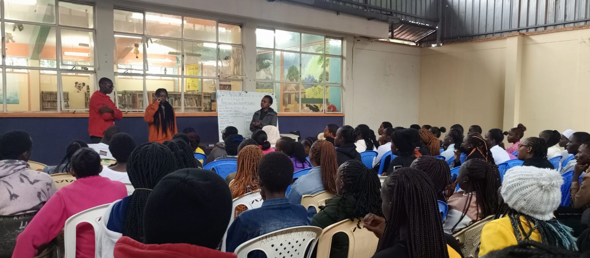
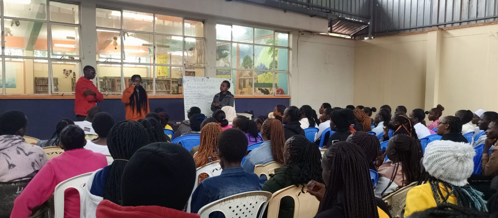

PRO_TERP SIGN LANGUAGE CENTRE
PRO_TERP SIGN LANGUAGE CENTRE
PRO-TERP Sign Language Training Centre is a professional institution established to promote accessible, inclusive, and effective communication through quality sign language training and certification. The centre was founded to bridge the communication gap between the Deaf and hearing communities by equipping learners with practical skills, cultural awareness, and professional competence applicable in education, healthcare, public service, and community settings. PRO-TERP is committed to empowering individuals to communicate ethically, accurately, and confidently while upholding the values and culture of the Deaf community. The mission of PRO-TERP Sign Language Training Centre is to provide high-quality sign language education and professional certification that supports inclusive communication and social integration. The centre aims to train competent sign language users and professional interpreters, promote inclusivity and accessibility across all sectors, enhance understanding and appreciation of Deaf culture and identity, offer certification programs that meet recognized professional standards, and support career development and community service through language skills. PRO-TERP Sign Language Training Centre offers a wide range of services designed to meet both educational and professional needs. These services include sign language training from beginner to advanced levels, professional interpreter training and preparation, sign language certification and competency assessment, Deaf culture education and communication ethics, consultancy in accessible communication, and website development services with a focus on accessibility and inclusive digital design. The centre operates across multiple locations to ensure accessibility to learners and stakeholders. The main campus is located in Thika, with additional branches in Meru and Ruiru. All branches operate under the same standards of instruction, training quality, and certification to ensure consistency and excellence across all locations. Guided by its motto, “Empowering Communication, Building Inclusion,” PRO-TERP Sign Language Training Centre remains dedicated to reducing communication barriers and fostering meaningful connections between individuals and communities through professional training, certification, and inclusive practice
 


OUR SERVICES INCLUDE:
1.Online learning
2.home teaching
3.physical class teaching
4.home teaching
MISSION:
To provide high-quality sign language education and professional certification that empowers individuals to communicate effectively, ethically, and inclusively while upholding the values and culture of the Deaf community.
MOTTO:
“Information is power”